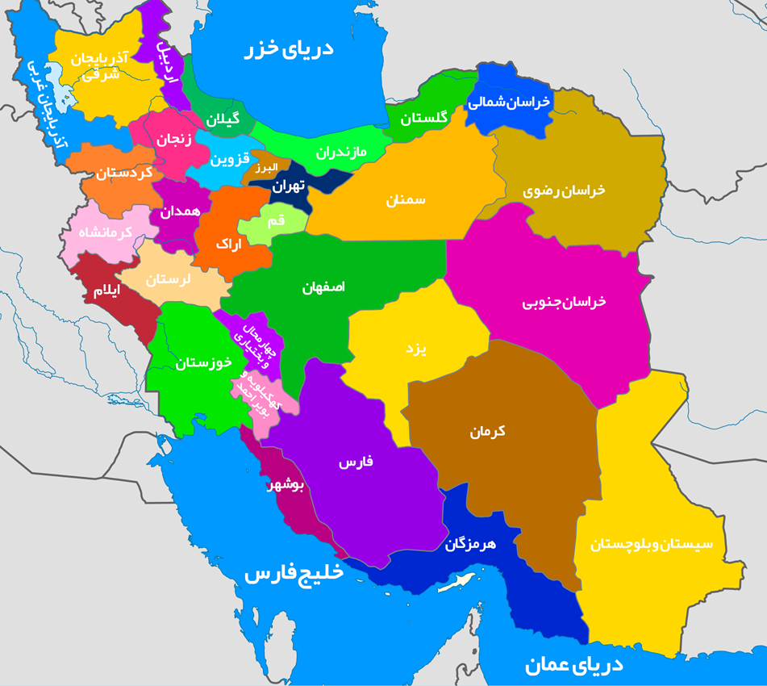

مقصد گردشگری خود را انتخاب کنید :

| : استان ها | ||
| آذربایجان شرقی | آذربایجان غربی | اردبیل |
| اصفهان | البرز | ایلام |
| بوشهر | تهران | چهارمحال و بختیاری |
| خراسان جنوبی | خراسان رضوی | خراسان شمالی |
| خوزستان | زنجان | سمنان |
| سیستان و بلوچستان | فارس | قزوین |
| قم | کردستان | کرمان |
| کرمانشاه | کهگیلویه و بویراحمد | گلستان |
| گیلان | لرستان | مازندران |
| مرکزی | هرمزگان | همدان |
| یزد | ||